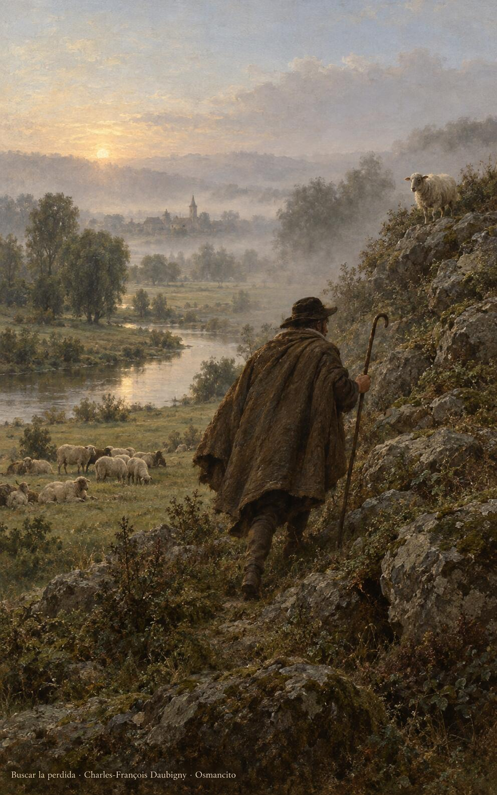
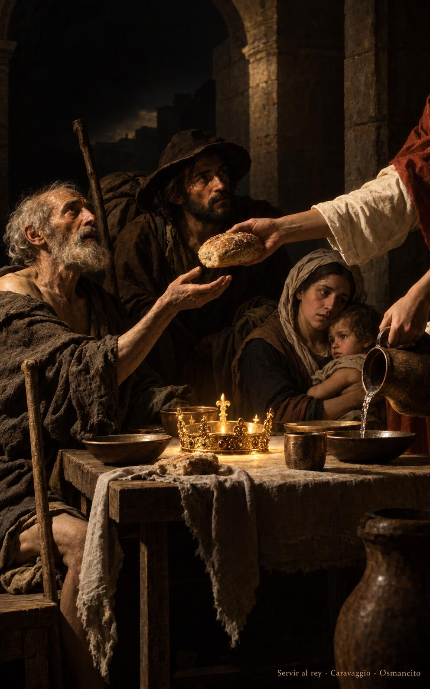

22 de noviembre de 2026
¡Buenos días!
El rey pastor
43
Cuando lo hicieron con el más insignificante de mis hermanos, conmigo lo hicieron.
Mateo 25,40. Fuente
Que el pastor nos busque cuando nos dispersemos en la niebla y nos haga reposar en praderas verdes. Que nada nos falte: mesa preparada, copa llena, herida curada, descarriado devuelto. Que reconozcamos al rey en el hambriento, en el sediento, en el forastero, en el preso, y que lo que hagamos con el más pequeño se lo hagamos a él. Que reine hasta entregar el reino al Padre, y que seamos ovejas a su derecha.

- El pastor cruza la ladera brumosa hacia la oveja extraviada mientras el rebaño reposa junto al río tranquilo: Ezequiel 34, yo mismo iré a buscar a mis ovejas.

- Sobre la mesa servida para los humildes brilla una corona entre los platos: Mateo 25, lo hecho al más insignificante se lo hacemos al rey.
¡Feliz domingo 22 de noviembre!
😊🙋♂
© 2026 Osmancito